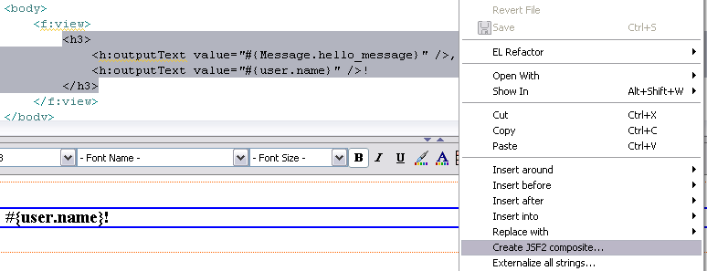
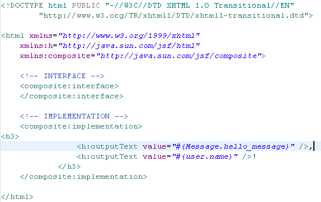

< Main Index CDI/Seam 3 Tools >
General |
|
| Disable Visual Editor |
Eclipse may crash while using Visual Editor on some Linux distributions because of https://bugs.eclipse.org/bugs/show_bug.cgi?id=349837. To workaround this issue which will be fixed in 3.7.1, we've created a command-line option for the users who experience this problem. Adding the following line to eclipse.ini (or jbdevstudio.ini in JBDS) as -vmargs will disable the Visual tab in the Visual Page Editor:
You can also use that directly from the command line:
|
Editor |
|
| Create JSF2 composite component via context menu |
Now you can create JSF2 component from the context menu using current source selection.  Composite component will be created and registered on the page.  |